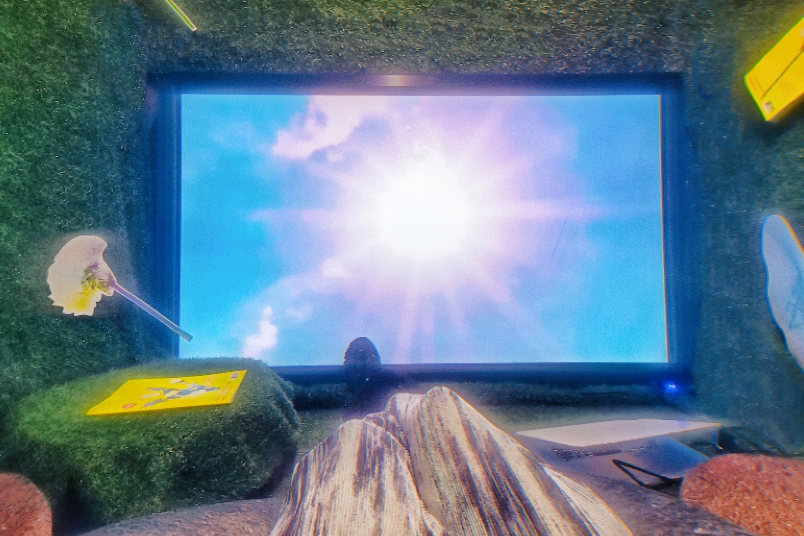
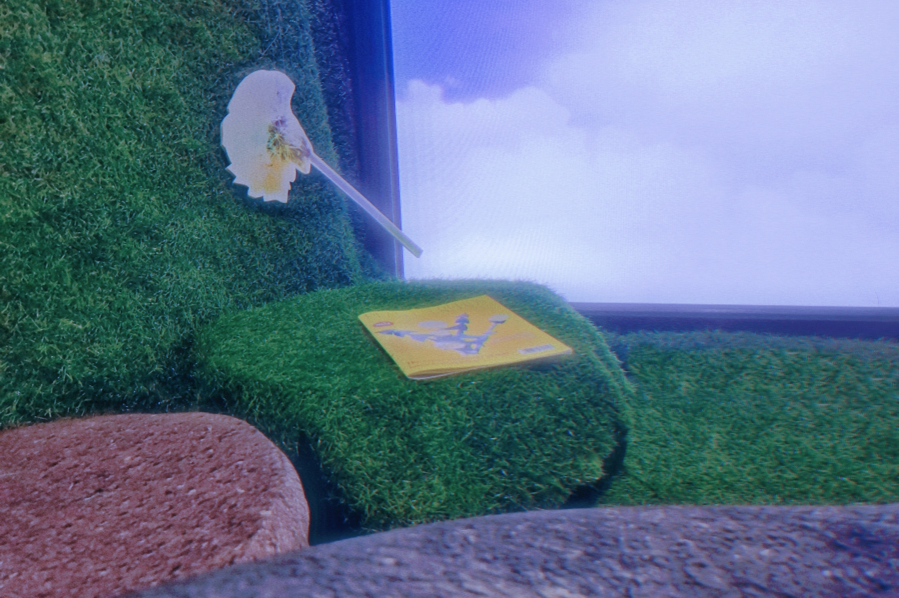
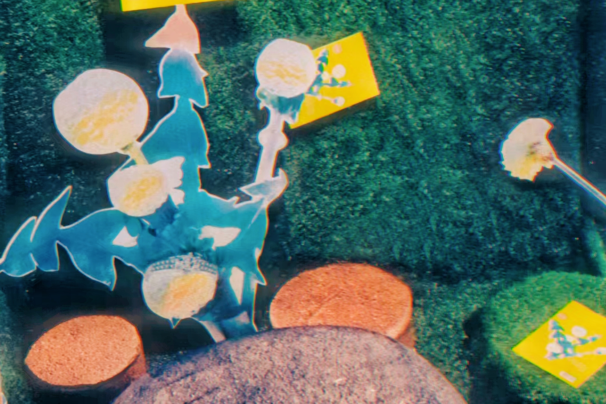
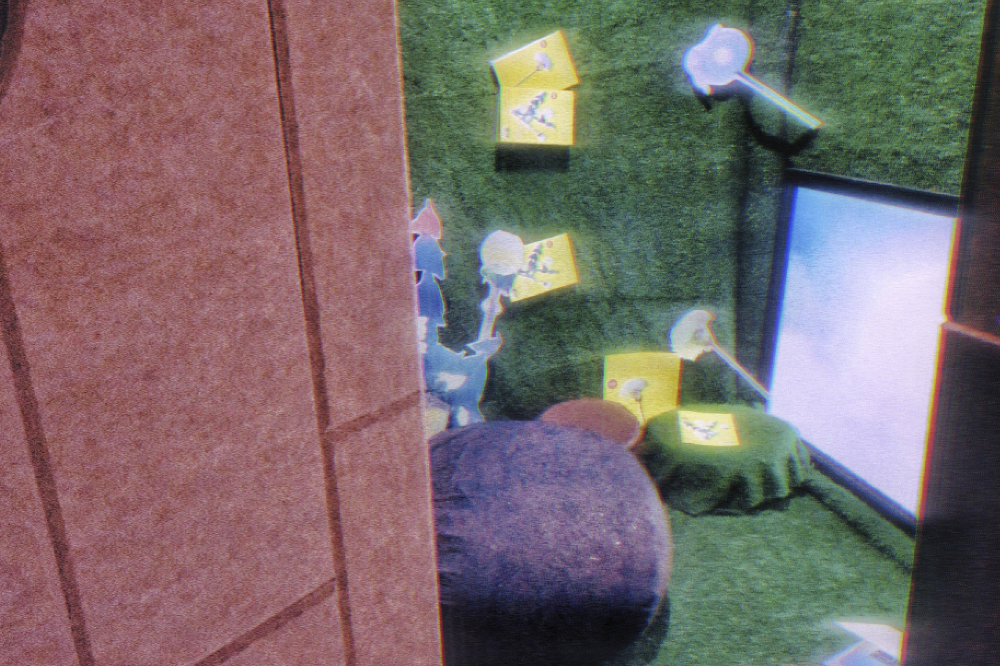
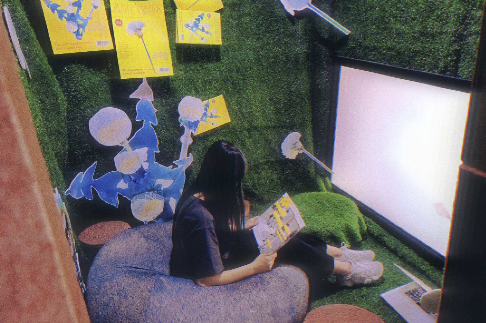
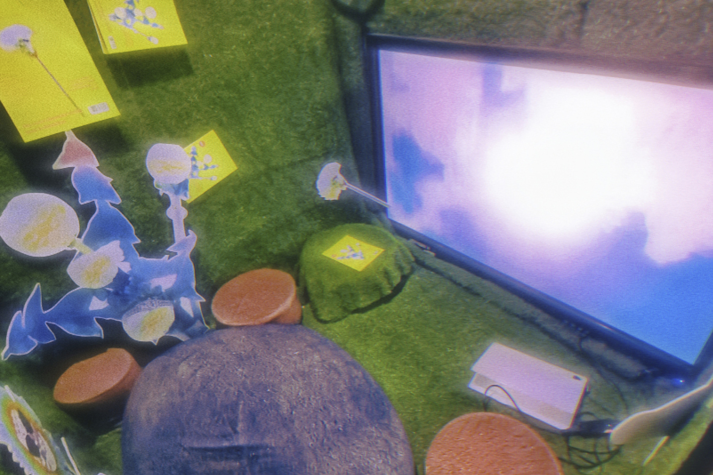

plant
hope to give people a sense oflens. It seems that each picture is a key lensof the film or a key scene of the puzzle gamecausing the reader's imagination, imaginingwhat will happen in the next second or nextpage, what she will do, and maintaining asense of mystery.Some of the objects in theroom are collages, and some are photos I tookafter adjusting the objects in the virtual engineMany items in the room are related to what loradoes, and there are also connections betweenrooms.

imagination, imaginingwhat will happen in the next second or nextpage, what she will do, and maintaining asense of mystery.
imagination, imaginingwhat will happen in the next second or nextpage, what she will do, and maintaining asense of mystery.
 
magination, imaginingwhat will happen in the next second or
